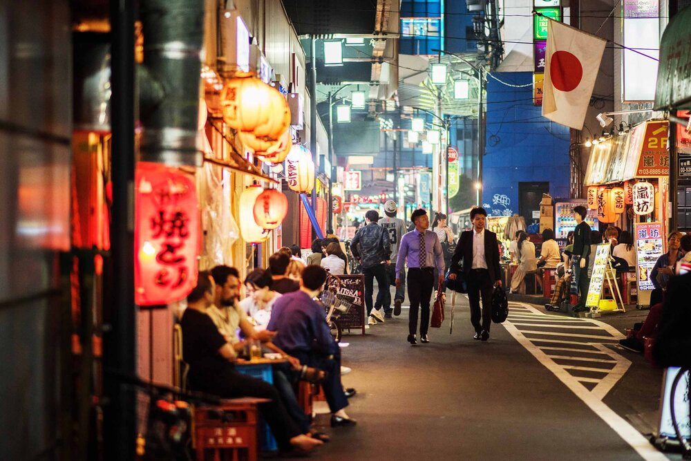
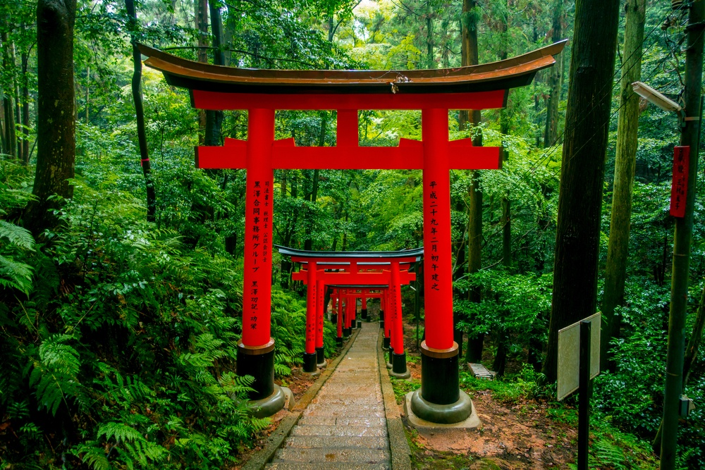

Introduction
I visited Japan last year and it was an amazing experience. Japan has a unique culture, beautiful landscapes, and delicious food. I would like to share my memory with you.
Place
I stayed in Tokyo for a week and it was a bustling city with neon lights, skyscrapers, and people everywhere. I also visited Kyoto which was a stark contrast to Tokyo with its temples, gardens, and traditional architecture.
 Food
Japanese food is one of the best in the world. I tried sushi, ramen, udon, tempura, and many more. One of my favorites was the Okonomiyaki which is a savory pancake with vegetables, meat, and seafood.
Culture
Japan has a rich culture with a deep respect for traditions and customs. I visited a few temples and witnessed a traditional tea ceremony which was a fascinating experience.

Sensoji Temple in historic Asakusa is the oldest temple in Tokyo as well as one of the most visited, with unique architecture and surrounded by shops and stalls.. This Buddhist temple's grounds are famed for also housing the Tanuki Temple, whose raccoon-dog spirits are said to protect the surrounding homes and businesses, as well as bring good luck.
The Japanese Tea Ceremony is a centuries-old tradition closely tied to Zen Buddhist principles, and a popular way to experience Japanese culture. There are several variations on this ritual. At its base, powdered green tea.